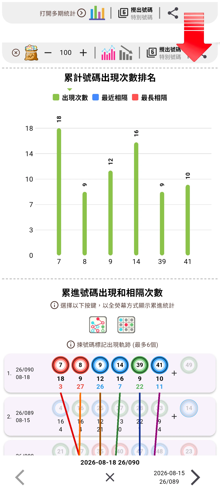
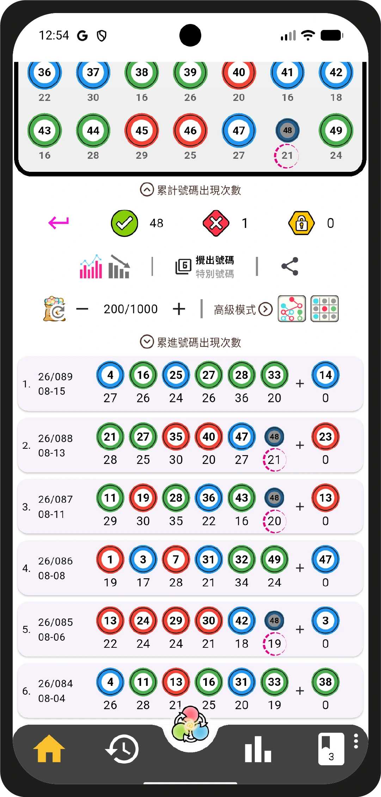
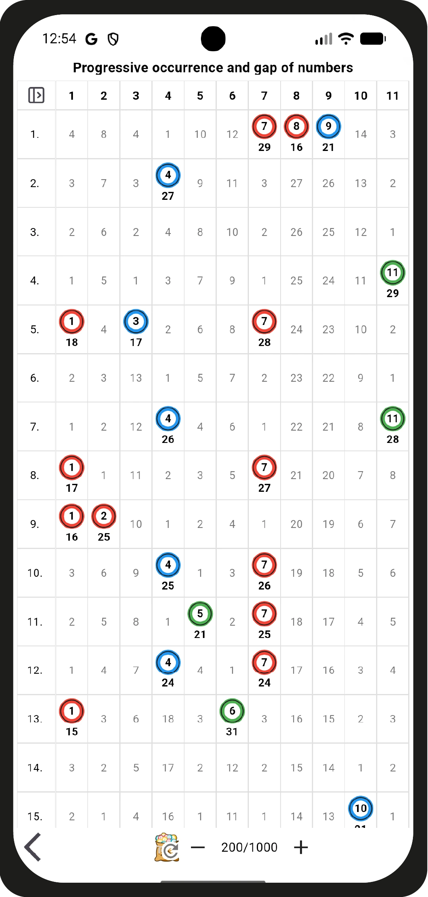
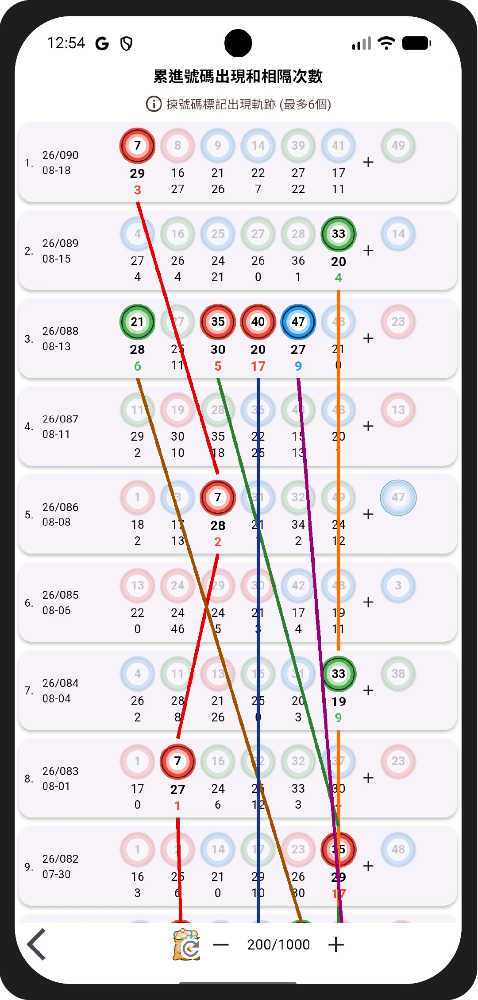
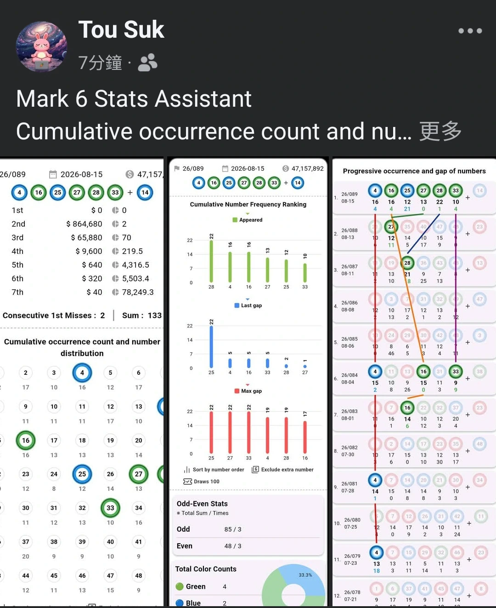
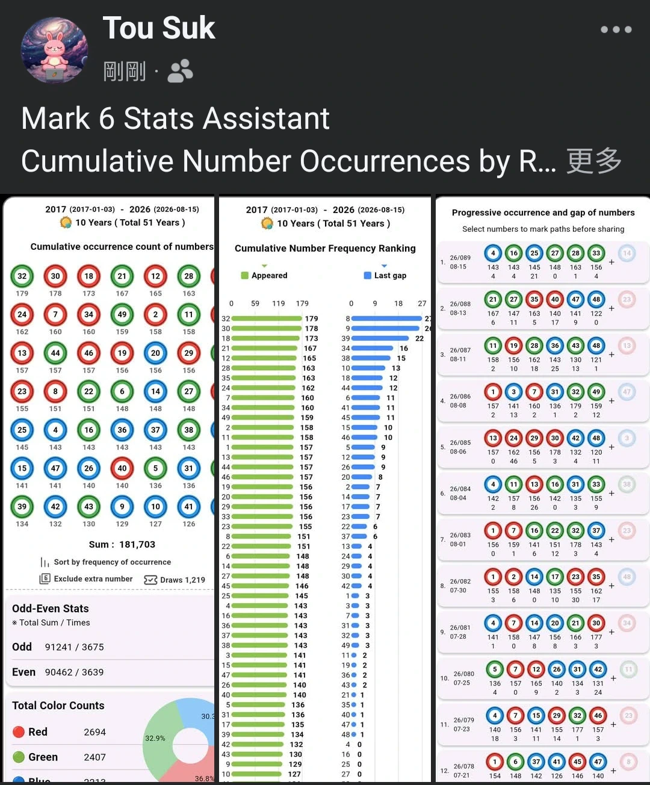

重大更新：版本 1.1.0
Major Update: Version 1.1.0
Version 1.0.0 ➔ 1.1.0
請到商店搜尋 六合彩統計 或 Mark 6 Stats 更新
Please search Mark 6 Stats in App Store / Google Play to update
頁面功能升級
/ Page Enhancements
PAGE 1
頁面1：新增大量文字描述；簡約頁面，需要點擊「多期統計」先會顯示相關統計
Page 1: Added detailed text descriptions; simplified page, multi-period stats appear only after tapping

PAGE 2
頁面2：原有累計次數基礎上新增顯示累進號碼出現次數，由原來只能顯示30個紀錄升級到1000紀錄
Page 2: Progressive number statistics added on top of cumulative counts, expanding records from 30 to 1,000

PAGE 3
頁面 3：新增累進號碼與相隔次數的全屏統計網格，紀錄數目可自由調整
Page 3: Added full‑screen grid for progressive and interval number statistics, with adjustable record counts

PAGE 4
頁面4：新增累進與相隔出現次數統計，並可任意設定連線追蹤，紀錄數目自由調整。
Page 4: Added progressive and interval statistics with customizable link tracking, and flexible record counts

PAGE 5
頁面 5：統計數據可自動拆分成多張圖片，分享到社交平台更清晰呈現
Page 5: Statistics can be automatically split into multiple images, making social platform sharing clearer.


⭐⭐⭐⭐⭐
請開啟Google Play，搜尋：
六合彩統計
Mark 6 Stats
點擊進入頁面完成更新，順便畀個星星好評 ！
Search "Mark 6 Stats" on App Store / Google Play to update and leave star review!